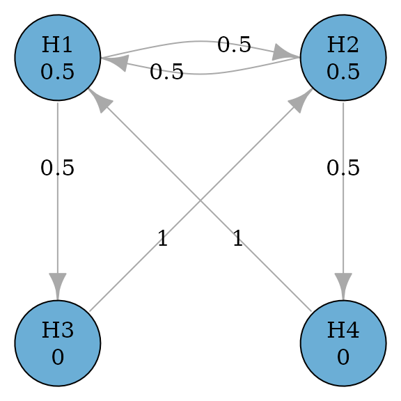

Sequentially rejective graphical multiple comparison procedures based on Bonferroni tests
Source:vignettes/shortcut-testing.Rmd
shortcut-testing.RmdMotivating example
Consider a confirmatory clinical trial comparing a test treatment (treatment) against the control treatment (control) for a disease. There are two doses of treatment: the low dose and the high dose. There are two endpoints included in the multiplicity adjustment strategy, which are the primary endpoint (PE) and the secondary endpoint (SE). In total, there are four null hypotheses: \(H_1\) and \(H_3\) are the primary and the secondary hypotheses respectively for the low dose versus control; \(H_2\) and \(H_4\) are the primary and the secondary hypotheses respectively for the high dose versus control.
There are clinical considerations which constrain the structure of multiple comparison procedures, and which can be flexibly incorporated using graphical approaches. First, the low and the high doses are considered equally important, which means that rejecting the primary hypothesis for either dose versus control leads to a successful trial. Regarding secondary hypotheses, each one is tested only if its corresponding primary hypothesis has been rejected. This means that \(H_3\) is tested only after \(H_1\) has been rejected; \(H_4\) is tested only after \(H_2\) has been rejected.
In addition, there are some statistical considerations to complete the graph. The primary hypotheses \(H_1\) and \(H_2\) will have an equal hypothesis weight of 0.5. The secondary hypotheses will have a hypothesis weight of 0. When a primary hypothesis has been rejected, its weight will be propagated along two outgoing edges: One to the other primary hypothesis and one to its descendant secondary hypothesis. The two edges will have an equal transition weight of 0.5. When both the primary and the secondary hypotheses have been rejected for a dose-control comparison, their hypothesis weights will be propagated to the primary hypothesis for the other dose-control comparison. With these specifications, we can create the following graph.
Create the graph
hypotheses <- c(0.5, 0.5, 0, 0)
transitions <- rbind(
c(0, 0.5, 0.5, 0),
c(0.5, 0, 0, 0.5),
c(0, 1, 0, 0),
c(1, 0, 0, 0)
)
hyp_names <- c("H1", "H2", "H3", "H4")
g <- graph_create(hypotheses, transitions, hyp_names)
plot(g, vertex.size = 60)
Perform the graphical multiple comparison procedure
Adjusted p-values and rejections
Given a set of p-values for \(H_1, \ldots,
H_4\), the graphical multiple comparison procedure can be
performed to control the familywise error rate (FWER) at the
significance level alpha. The
graph_test_shortcut function is agnostic to one-sided or
two-sided tests. For one-sided p-values, alpha is often set
to 0.025 (default); for two-sided p-values, alpha is often
set to 0.05. We consider one-sided tests here. A hypothesis is rejected
if its adjusted p-value is less than or equal to alpha.
After running the procedure, hypotheses \(H_1\), \(H_2\), and \(H_4\) are rejected with their adjusted
p-value calculated.
p_values <- c(.018, .01, .105, .006)
test_results <- graph_test_shortcut(g, p = p_values, alpha = 0.025)
test_results$outputs$adjusted_p # Adjusted p-values
#> H1 H2 H3 H4
#> 0.024 0.020 0.105 0.024
test_results$outputs$rejected # Rejections
#> H1 H2 H3 H4
#> TRUE TRUE FALSE TRUEObtain final and intermediate graphs after rejections
The final graph is the graph after removing rejected hypotheses \(H_1\), \(H_2\), and \(H_4\). It can be obtained via
test_results$outputs$graph. Rejected hypotheses get a
hypothesis weight of NA and a transition weight of
NA. This is based on the printing method of
print.updated_graph. We can also obtain the non-NA graph by
calling hypothesis weights and transition weights separately via
test_results$outputs$graph$hypotheses and
test_results$outputs$graph$transitions. Note in this case,
rejected hypotheses get a 0 hypothesis weight and a 0 transition weight.
This is mainly for internal calculation and updating of graphs.
If we are also interested in intermediate graphs - for example, the
graph after \(H_2\) and \(H_1\) are rejected - we can specify
verbose = TRUE in graph_test_shortcut. Note
that intermediate graphs depend on the order of rejections, i.e., the
sequence of hypotheses being rejected. The default order is defined by
the increasing adjusted p-values, followed by the earlier hypothesis
numbering in the case of ties. In this example, the default order of
rejection is \(H_2\rightarrow H_1\rightarrow
H_4\). To obtain intermediate graphs based on this order of
rejection, one can specify
test_results_verbose$details$results. For example, the
graph after \(H_2\) and \(H_1\) being rejected is given by
test_results_verbose$details$results[[3]].
test_results$outputs$graph # Final graph after H1, H2 and H4 rejected (as NA's)
#> Updated graph
#>
#> --- Hypothesis weights ---
#> H1: NA
#> H2: NA
#> H3: 1
#> H4: NA
#>
#> --- Transition weights ---
#> H1 H2 H3 H4
#> H1 NA NA NA NA
#> H2 NA NA NA NA
#> H3 NA NA 0 NA
#> H4 NA NA NA NA
test_results$outputs$graph$hypotheses # Hypothesis weights of the final graph
#> H1 H2 H3 H4
#> 0 0 1 0
test_results$outputs$graph$transitions # Transition weights of the final graph
#> H1 H2 H3 H4
#> H1 0 0 0 0
#> H2 0 0 0 0
#> H3 0 0 0 0
#> H4 0 0 0 0
test_results_verbose <- graph_test_shortcut(
g,
p = p_values,
alpha = 0.025,
verbose = TRUE
)
# Intermediate graph after H1 and H2 rejected
test_results_verbose$details$results[[3]]
#> Updated graph
#>
#> --- Hypothesis weights ---
#> H1: NA
#> H2: NA
#> H3: 0.5
#> H4: 0.5
#>
#> --- Transition weights ---
#> H1 H2 H3 H4
#> H1 NA NA NA NA
#> H2 NA NA NA NA
#> H3 NA NA 0 1
#> H4 NA NA 1 0Obtain possible orders of rejections
The order of rejections may not be unique and not all orders are
valid. For this example, the rejected hypotheses are \(H_1\), \(H_2\) and \(H_4\). The default order of rejections is
\(H_2 \rightarrow H_1 \rightarrow
H_4\). Another valid order of rejections is \(H_2 \rightarrow H_4 \rightarrow H_1\).
However, the first rejected hypothesis can not be \(H_1\) or \(H_4\). To obtain all possible rejection
orders, one can use the function graph_rejection_orderings.
Then intermediate and final graphs can be obtained by using the function
graph_update with a particular order of rejections.
# Obtain all valid orders of rejections
orders <- graph_rejection_orderings(test_results)$valid_orderings
orders
#> [[1]]
#> H2 H1 H4
#> 2 1 4
#>
#> [[2]]
#> H2 H4 H1
#> 2 4 1
# Intermediate graphs following the order of H2 and H4
graph_update(g, delete = orders[[2]])$intermediate_graphs[[3]]
#> Updated graph
#>
#> --- Hypothesis weights ---
#> H1: 1
#> H2: NA
#> H3: 0
#> H4: NA
#>
#> --- Transition weights ---
#> H1 H2 H3 H4
#> H1 0 NA 1 NA
#> H2 NA NA NA NA
#> H3 1 NA 0 NA
#> H4 NA NA NA NAObtain adjusted significance levels
An equivalent way to obtain rejections is by adjusting significance
levels. A hypothesis is rejected if its p-value is less than or equal to
its adjusted significance level. The adjusted significance levels are
calculated in the same order as adjusted p-values: \(H_2 \rightarrow H_1 \rightarrow H_4\), and
there are four steps of checking for rejections. First, \(H_2\) is rejected at an adjusted
significance level of 0.5 * alpha. Second, \(H_1\) is rejected at an adjusted
significance level of 0.75 * alpha, after \(H_2\) is rejected. Third, \(H_4\) is rejected at an adjusted
significance level of 0.5 * alpha, after \(H_1\) and \(H_2\) are rejected. Fourth and finally,
\(H_3\) cannot be rejected at an
adjusted significance level of alpha, after \(H_1\), \(H_2\) and \(H_4\) are rejected. These results can be
obtained by specifying test_values = TRUE.
test_results_test_values <- graph_test_shortcut(
g,
p = p_values,
alpha = 0.025,
test_values = TRUE
)
test_results_test_values$test_values$results
#> Step Hypothesis p <= Weight * Alpha Inequality_holds
#> H2 1 H2 0.010 <= 0.50 * 0.025 TRUE
#> H1 2 H1 0.018 <= 0.75 * 0.025 TRUE
#> H4 3 H4 0.006 <= 0.50 * 0.025 TRUE
#> H3 4 H3 0.105 <= 1.00 * 0.025 FALSEPower simulation
Given the above graph, we are interested in the “power” of the trial.
For a single null hypothesis, the power is the probability of a true
positive - that is, rejecting the null hypothesis at the significance
level alpha when the alternative hypothesis is true. For
multiple null hypotheses, there could be multiple versions of “power”.
For example, the power to reject at least one hypothesis vs the power to
reject all hypotheses, given the alternative hypotheses are true. With
the graphical multiple comparison procedures, it is also important to
understand the power to reject each hypothesis, given the multiplicity
adjustment. Sometimes, we may want to customize definitions of power to
define success. Thus power calculation is an important aspect of trial
design.
Input: Marginal power for primary hypotheses
Assume that the primary endpoint is about the occurrence of an
unfavorable clinical event. To evaluate the treatment effect, the
proportion of patients with this event is calculated, and a lower
proportion is preferred. Assume that the proportions are 0.181 for the
low and the high doses, and 0.3 for control. Using the equal
randomization among the three treatment groups, the clinical trial team
chooses a total sample size of 600 with 200 per group. This leads to a
marginal power of 80% for \(H_1\) and
\(H_2\), respectively, using the
two-sample test for difference in proportions with unpooled variance
each at one-sided significance level 0.025. In this calculation, we use
the marginal power to combine the information from the treatment effect,
any nuisance parameter, and sample sizes for each hypothesis. Note that
the significance level used for the marginal power calculation must be
the same as alpha, which is used as the significance level
for the FWER control. In addition, the marginal power has a one-to-one
relationship with the noncentrality parameter, which is illustrated
below.
alpha <- 0.025
prop <- c(0.3, 0.181, 0.181)
sample_size <- rep(200, 3)
unpooled_variance <-
prop[-1] * (1 - prop[-1]) / sample_size[-1] +
prop[1] * (1 - prop[1] ) / sample_size[1]
noncentrality_parameter_primary <-
-(prop[-1] - prop[1]) / sqrt(unpooled_variance)
power_marginal_primary <- pnorm(
qnorm(alpha, lower.tail = FALSE),
mean = noncentrality_parameter_primary,
sd = 1,
lower.tail = FALSE
)
names(power_marginal_primary) <- c("H1", "H2")
power_marginal_primary
#> H1 H2
#> 0.8028315 0.8028315Input: Marginal power for secondary hypotheses
Assume that the secondary endpoint is about the change in total medication score from baseline, which is a continuous outcome. To evaluate the treatment effect, the mean change is calculated, and greater reduction is preferred. Assume that the mean change from baseline is the reduction of 7.5 and 8.25, respectively for the low and the high doses, and 5 for control. Further assume a known common standard deviation of 10. Given the sample size of 200 per treatment group, the marginal power is 71% and 90% for \(H_3\) and \(H_4\), respectively, using the two-sample \(z\)-test for the difference in means each at the one-sided significance level 0.025.
mean_change <- c(5, 7.5, 8.25)
sd <- rep(10, 3)
variance <- sd[-1]^2 / sample_size[-1] + sd[1]^2 / sample_size[1]
noncentrality_parameter_secondary <-
(mean_change[-1] - mean_change[1]) / sqrt(variance)
power_marginal_secondary <- pnorm(
qnorm(alpha, lower.tail = FALSE),
mean = noncentrality_parameter_secondary,
sd = 1,
lower.tail = FALSE
)
names(power_marginal_secondary) <- c("H3", "H4")
power_marginal_secondary
#> H3 H4
#> 0.7054139 0.9014809Input: Correlation structure to simulate test statistics
In addition to the marginal power, we also need to make assumptions about the joint distribution of test statistics. In this example, we assume that they follow a multivariate normal distribution with means defined by the noncentrality parameters above and the correlation matrix \(R\). To obtain the correlations, it is helpful to understand that there are two types of correlations in this example. The correlation between two dose-control comparisons for the same endpoint and the correlation between endpoints. The former correlation can be calculated as a function of sample size. For example, the correlation between test statistics for \(H_1\) and \(H_2\) is \(\rho_{12}=\left(\frac{n_1}{n_1+n_0}\right)^{1/2}\left(\frac{n_2}{n_3+n_0}\right)^{1/2}\). Under the equal randomization, this correlation is 0.5. The correlation between test statistics for \(H_3\) and \(H_4\) is the same as the above. On the other hand, the correlation between endpoints for the same dose-control comparison is often estimated based on prior knowledge or from previous trials. Without the information, we assume it to be \(\rho_{13}=\rho_{24}=0.5\). In practice, one could set this correlation as a parameter and try multiple values to assess the sensitivity of this assumption. Regarding the correlation between test statistics for \(H_1\) and \(H_4\) and for \(H_2\) and \(H_3\), they are even more difficult to estimate. Here we use a simple product rule, which means that this correlation is a product of correlations of the two previously assumed correlations. For example, \(\rho_{14}=\rho_{12}*\rho_{24}\) and \(\rho_{23}=\rho_{12}*\rho_{13}\). In practice, one may make further assumptions instead of using the product rule.
corr <- matrix(0, nrow = 4, ncol = 4)
corr[1, 2] <-
corr[3, 4] <-
sqrt(
sample_size[2] / sum(sample_size[1:2]) *
sample_size[3] / sum(sample_size[c(1, 3)])
)
rho <- 0.5
corr[1, 3] <- corr[2, 4] <- rho
corr[1, 4] <- corr[2, 3] <- corr[1, 2] * rho
corr <- corr + t(corr)
diag(corr) <- 1
colnames(corr) <- hyp_names
rownames(corr) <- hyp_names
corr
#> H1 H2 H3 H4
#> H1 1.00 0.50 0.50 0.25
#> H2 0.50 1.00 0.25 0.50
#> H3 0.50 0.25 1.00 0.50
#> H4 0.25 0.50 0.50 1.00User-defined success criteria
As mentioned earlier, there are multiple versions of “power” when there are multiple hypotheses. Commonly used “power” definitions include:
- Local power: The probability of each hypothesis being rejected (with multiplicity adjustment)
- Expected no. of rejections: The expected number of rejections
- Power to reject 1 or more: The probability to reject at least one hypothesis
- Power to reject all: The probability to reject all hypotheses
These are the default outputs from the
graph_calculate_power function. In addition, a user can
customize success criteria to define other versions of “power”.
success_fns <- list(
# Probability to reject H1
H1 = function(x) x[1],
# Expected number of rejections
`Expected no. of rejections` = function(x) x[1] + x[2] + x[3] + x[4],
# Probability to reject at least one hypothesis
`AtLeast1` = function(x) x[1] | x[2] | x[3] | x[4],
# Probability to reject all hypotheses
`All` = function(x) x[1] & x[2] & x[3] & x[4],
# Probability to reject both H1 and H2
`H1andH2` = function(x) x[1] & x[2],
# Probability to reject both hypotheses for the low dose or the high dose
`(H1andH3)or(H2andH4)` = function(x) (x[1] & x[3]) | (x[2] & x[4])
)Output: Simulate power
Given the above inputs, we can estimate “power” via simulation for
the graphical multiple comparison procedure at one-sided significance
level alpha = 0.025 using sim_n = 1e5
simulations and the random seed 1234. The local power is 0.758, 0.765,
0.689, and 0.570, respectively for \(H_1,
\ldots, H_4\). Note that the local power is lower than the
marginal power because the former is adjusted for multiplicity. The
power to reject at least one hypothesis is 0.856 and the power to reject
all hypotheses is 0.512. The expected number of rejections is 2.782. For
the last two user-defined success criteria, the probability to reject
both \(H_1\) and \(H_2\) is 0.667, and the probability to
reject at least one pair of \((H_1\)
and \(H_3)\) and \((H_2\) and \(H_4)\) is 0.747.
set.seed(1234)
power_output <- graph_calculate_power(
g,
alpha = .025,
sim_corr = corr,
sim_n = 1e5,
power_marginal = c(power_marginal_primary, power_marginal_secondary),
sim_success = success_fns
)
power_output$power
#> $power_local
#> H1 H2 H3 H4
#> 0.76396 0.75887 0.56767 0.69133
#>
#> $power_expected
#> [1] 2.78183
#>
#> $power_at_least_1
#> [1] 0.85557
#>
#> $power_all
#> [1] 0.51205
#>
#> $power_success
#> H1 Expected no. of rejections
#> 0.76396 2.78183
#> AtLeast1 All
#> 0.85557 0.51205
#> H1andH2 (H1andH3)or(H2andH4)
#> 0.66726 0.74695To see the detailed outputs of all simulated p-values and rejection
decisions for all hypotheses, specify verbose = TRUE. This
will produce a lot of outputs. To allow flexible printing functions, a
user can change the following:
- The indented space with the default setting of
indent = 2 - The precision of numeric values (i.e., the number of significant
digits) with the default setting of
precision = 4
set.seed(1234)
power_verbose_output <- graph_calculate_power(
g,
alpha = .025,
sim_corr = corr,
sim_n = 1e5,
power_marginal = c(power_marginal_primary, power_marginal_secondary),
sim_success = success_fns,
verbose = TRUE
)
head(power_verbose_output$details$p_sim, 10)
#> H1 H2 H3 H4
#> [1,] 0.0308204265 0.0120653993 0.0041185823 9.324338e-02
#> [2,] 0.0007933716 0.0006499046 0.0245177515 2.965604e-03
#> [3,] 0.0302991819 0.0595395828 0.0543082956 2.625834e-02
#> [4,] 0.0097433244 0.0033185711 0.0007417213 4.024688e-04
#> [5,] 0.0197134942 0.0086161835 0.0164182765 2.418325e-07
#> [6,] 0.0031206572 0.0067023099 0.0137441457 2.751703e-04
#> [7,] 0.0302208038 0.1423757994 0.0060382838 2.117403e-02
#> [8,] 0.0024975725 0.0294025573 0.0004142729 2.207786e-03
#> [9,] 0.0618994292 0.0387257108 0.3166125781 5.699791e-02
#> [10,] 0.3677921053 0.1895975134 0.0702264885 1.189651e-02
print(power_verbose_output, indent = 4, precision = 6)
#>
#> Test parameters ($inputs) ------------------------------------------------------
#> Initial graph
#>
#> --- Hypothesis weights ---
#> H1: 0.5
#> H2: 0.5
#> H3: 0.0
#> H4: 0.0
#>
#> --- Transition weights ---
#> H1 H2 H3 H4
#> H1 0.0 0.5 0.5 0.0
#> H2 0.5 0.0 0.0 0.5
#> H3 0.0 1.0 0.0 0.0
#> H4 1.0 0.0 0.0 0.0
#>
#> Alpha = 0.025
#>
#> Test types
#> bonferroni: (H1, H2, H3, H4)
#>
#> Simulation parameters ($inputs) ------------------------------------------------
#> Testing 100,000 simulations with multivariate normal params:
#>
#> H1 H2 H3 H4
#> Marginal power: 0.802831 0.802831 0.705414 0.901481
#>
#> Correlation: H1 H2 H3 H4
#> H1 1.00 0.50 0.50 0.25
#> H2 0.50 1.00 0.25 0.50
#> H3 0.50 0.25 1.00 0.50
#> H4 0.25 0.50 0.50 1.00
#>
#> Power calculation ($power) -----------------------------------------------------
#> H1 H2 H3 H4
#> Local power: 0.76396 0.75887 0.56767 0.69133
#>
#> Expected no. of rejections: 2.78183
#> Power to reject 1 or more: 0.85557
#> Power to reject all: 0.51205
#>
#> Success measure Power
#> H1 0.76396
#> Expected no. of rejections 2.78183
#> AtLeast1 0.85557
#> All 0.51205
#> H1andH2 0.66726
#> (H1andH3)or(H2andH4) 0.74695
#>
#> Simulation details ($details) --------------------------------------------------
#> p_sim_H1 p_sim_H2 p_sim_H3 p_sim_H4 rej_H1 rej_H2 rej_H3 rej_H4
#> 3.08204e-02 1.20654e-02 4.11858e-03 9.32434e-02 FALSE TRUE FALSE FALSE
#> 7.93372e-04 6.49905e-04 2.45178e-02 2.96560e-03 TRUE TRUE TRUE TRUE
#> 3.02992e-02 5.95396e-02 5.43083e-02 2.62583e-02 FALSE FALSE FALSE FALSE
#> 9.74332e-03 3.31857e-03 7.41721e-04 4.02469e-04 TRUE TRUE TRUE TRUE
#> 1.97135e-02 8.61618e-03 1.64183e-02 2.41833e-07 TRUE TRUE TRUE TRUE
#> 3.12066e-03 6.70231e-03 1.37441e-02 2.75170e-04 TRUE TRUE TRUE TRUE
#> 3.02208e-02 1.42376e-01 6.03828e-03 2.11740e-02 FALSE FALSE FALSE FALSE
#> 2.49757e-03 2.94026e-02 4.14273e-04 2.20779e-03 TRUE FALSE TRUE FALSE
#> 6.18994e-02 3.87257e-02 3.16613e-01 5.69979e-02 FALSE FALSE FALSE FALSE
#> 3.67792e-01 1.89598e-01 7.02265e-02 1.18965e-02 FALSE FALSE FALSE FALSE
#> ... (Use `print(x, rows = <nn>)` for more)